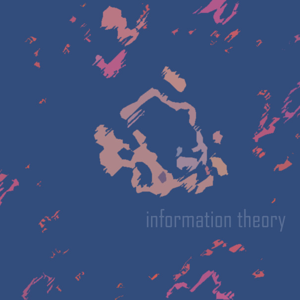

Information Theory

- 01. Information Theory
Information Theory starts with random notes—me standing between the guitar on its stand and the amp, one finger on a control knob and the other hand playing the strings. These chaotic notes eventually make way for a whining man. His whining, too, is senseless... playful yet irrelevant and meaningless. This also eventually subsides, and opens the way for disordered scratches and ambience. It slowly rises, failing to hold onto any sort of structure, before suddenly being interrupted by a deep hum that permeates throughout this section. The scratches briefly try to regain their dominance, but quickly fail. The ambience dies... and we're only left with the monotonous, repetitive tone. Ultimately, this tone, too, fails to maintain its dominance.
This is the tentative battle between order and disorder.
The inspiration for Information Theory comes from the 9th chapter of James Gleick's Chaos, titled 'The Dynamical Systems Collective.' Over 32 pages, Gleick tells the amazing story of a group of young(ish) physicists that cut against the grain and found themselves influencing the path of chaos theory. Specifically, their trade was in examining chaotic systems, searching for order or disorder.
This was just a small part of the bigger picture, however. Information theory had existed for longer than some of them had been alive, having been developed by Claude Shannon in the late 1940s. Similarly, I tend to focus on a small part of the theory, which is this notion: simplicity has little information; complexity has a great deal of information.
I had this thought running through my head during the 20-odd minutes of recording (the only cutting/editing I did was in removing the parts between the two guitar sections), the bubbling contrast between simplicity and complexity. I imagined what it'd be like to be a machine (sorry, Rodney, but I don't have a better word) that only saw the world in bits...
The wall in front of me a straight line of code, morphing and shifting as I turn the corner. The smooth table is a repetitive string of digits, but the table cloth is a complex menagerie of numbers and letters that tell me the colour, shape, size, pattern, texture, groove direction, and every other little detail that I'd need to know.
Just look around at your own surroundings, and try to see. All that information surrounding you; an elaborate painting that swerves between primary colours and tertiary colours, and then back again.
And as you envision how straight your wall is, picture what code a straight, repetitive note would form; and how this line of code would suddenly jolt to life as the note changes again and again and again, sixteen times for every previous beat of the repetitive semibreve.
Lots of code and little. Lots of information and little. Difficult and easy. Erratic and predictable. A zigzag and a straight line. Antonyms and synonyms. Rough and smooth. Dirty, clean. Intricate, plain, convoluted, elaborate, minimal, sophisticated, modest, unadorned, strenuous, taxing, effortless, demanding, spirited, tame, flat, bland, dull, lifeless, vibrant, vivacious, dreamy, lethargic, vigorous, dynamic, listless, alive, stiff, never, always, everything, something, nothing... nothing is something. Something is everything.
This is the essence of Information Theory. You don't know what's coming. Even if you do.
Track details
I want to reiterate and emphasise the fact that this was all recorded in one go; barring the bookend edits, everything is unchanged. I say this because all the fades and transitions, distortions, and manipulations aren't post-production effects. They were created in real-time, both intentionally and accidentally. While I knew what I wanted to achieve, truthfully, I could only hope that what would come out of the other side was what I had in mind.
This process lends itself to the unpredictability I've mentioned before. If listening to this is an unpredictable experience, the process of making it is something else entirely.
See also
- An accompanying video version of this item can be found in our footage section.
Usage of this item elsewhere
- All of the files associated with this item can be downloaded from the Internet Archive.
- If you want to support the project, this item can also be purchased from Bandcamp.
- Selected tracks from this item can be downloaded from Freesound.
- Watch the associated video on YouTube.
Supporters
- ghostwheel on Patreon
License & Attribution
By Joaquim Baeta. The files associated with this video are licensed under a Creative Commons Attribution 4.0 International license. You are free to distribute, remix, adapt, and build upon them in any medium or format, even for commercial purposes, provided you give appropriate credit to Joaquim Baeta.
Example attribution: "Variations of the Theme for Bokeh in Motion" by Joaquim Baeta, https://scenoptica.com/sound/variations-of-the-theme-for-bokeh-in-motion.html, CC BY.